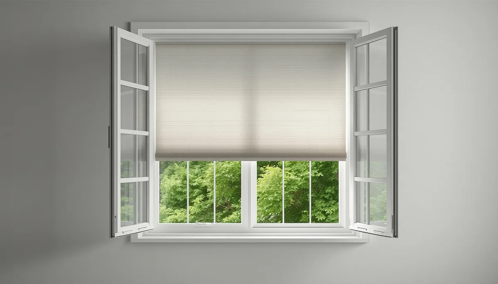

Calidad del aire interior y ventilación del hogar
El aire que respiramos en el interior de los edificios suele acumular concentraciones de contaminantes muy superiores a las del exterior. En el caso de los menores, cuyo sistema respiratorio se encuentra en pleno desarrollo, esta exposición continuada puede repercutir negativamente en su bienestar y favorecer la aparición de problemas alérgicos o respiratorios.
La importancia de una ventilación diaria y cruzada
Abrir las ventanas durante al menos diez o quince minutos al día, preferiblemente generando corrientes cruzadas, permite renovar el aire acumulado y disipar el exceso de dióxido de carbono y humedad. Este sencillo hábito nocturno o matinal reduce de forma drástica la presencia de partículas en suspensión en las habitaciones infantiles.
Reducción de compuestos orgánicos volátiles (COV)
Muchos materiales de construcción, pinturas sintéticas, mobiliario aglomerado y ambientadores artificiales liberan de forma constante compuestos orgánicos volátiles al ambiente. Minimizar el uso de fragancias comerciales, elegir pinturas con certificación ecológica y ventilar a fondo los muebles nuevos ayuda a mantener un aire limpio y seguro en casa.
"Ventilar los espacios cotidianos de forma regular es la medida más sencilla y eficaz para proteger la salud respiratoria de la infancia frente a los contaminantes invisibles del hogar."
Control de la humedad y prevención de mohos
Mantener los niveles de humedad interior por debajo de los límites recomendados previene la proliferación de hongos y ácaros de polvo, dos de los principales desencornantes de la hiperreactividad bronquial y las alergias en los menores.
➔ Volver al índice de Salud ambiental infantil